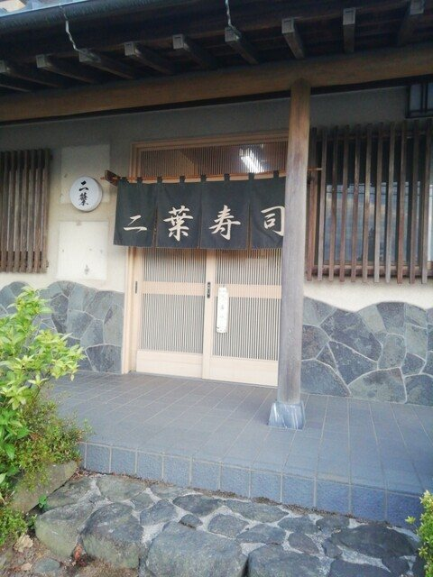
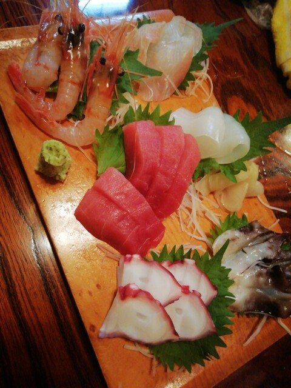
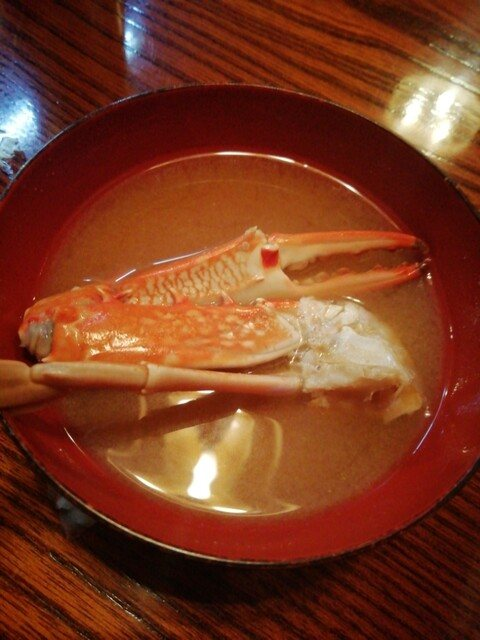
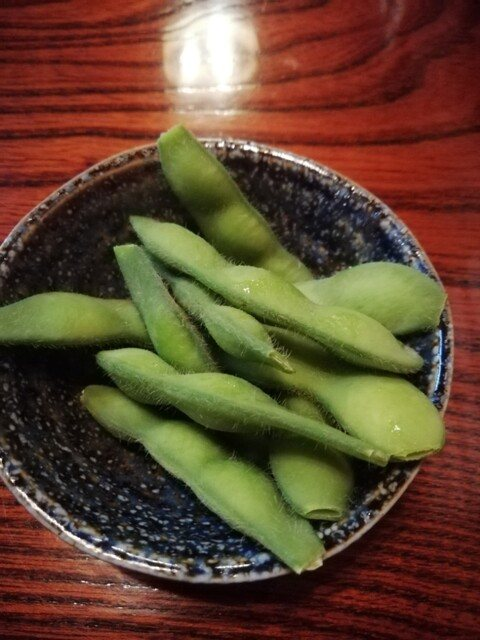
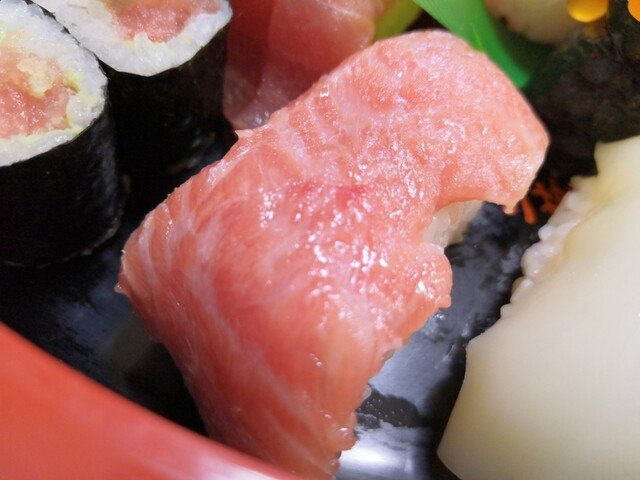
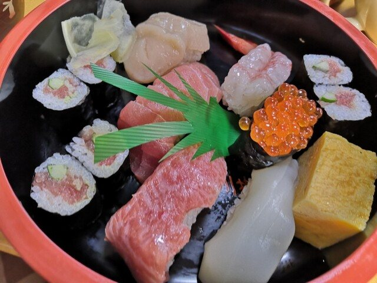
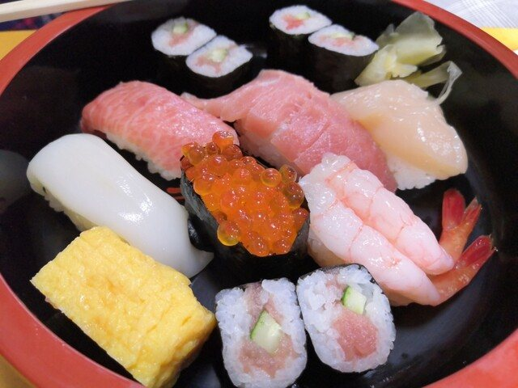

店先の札に刷ってあるのは、にぎり、ちらし、巻きもの、お好み——この四行でございます。
このページには、五つめの行を空けて置きました。
ここへ入るのは鮨のほかのもので、お客様ごとに変わりますので、刷ることができません。
品書きには刷っておりませんが、これまでにお出ししてまいりました。



にぎりは並から特上まで。ちらしに、てっか丼に、巻きもの。ご注文をいただいてから、ひとつずつ握ってお出しします。



親方と女将の、二人でやっております。
仕込みも、握るのも、お出しするのも、この二人の手でございます。
どうぞ、ごゆっくりなさってください。
木の格子の引き戸を開けて、お入りください。
| 住所 | 〒306-0125 茨城県古河市三和137 |
|---|---|
| 電話 | 0280-48-1488 |
| 営業時間 | 昼 11:30〜14:00（水曜はお休み） |
| 夜 17:00〜21:00 | |
| 定休日 | 木曜 |
今日も、握ってお待ちしております。